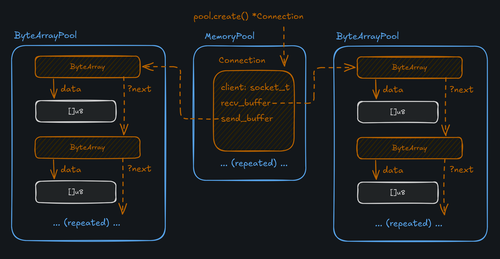
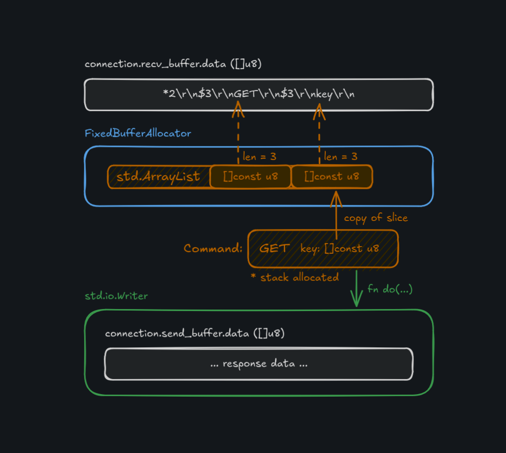
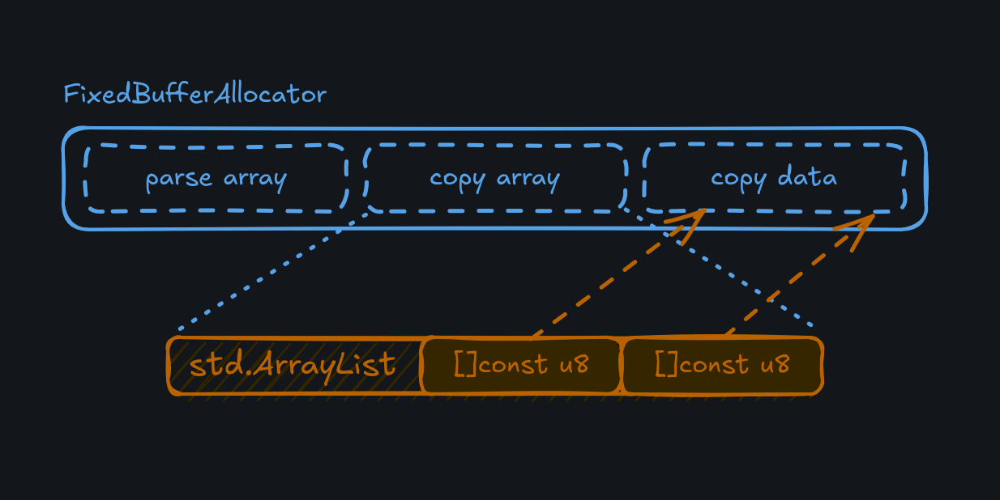
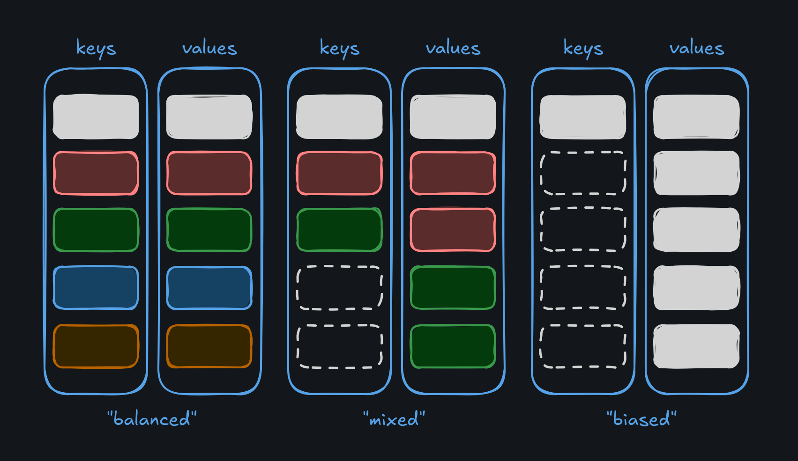

Over the past few months I've been chipping away at a small Redis-compatible key/value server called
kv. The goal is to have something (mostly) production-ready, while implementing
only a small subset of commands. The world doesn't necessarily need another key/value store, I'm just interested in
implementing it in Zig and learning about some new (to me) techniques for systems programming.
One of those techniques is static memory allocation during initialization. The idea here is that all memory is requested and allocated from the OS at startup, and held until termination. I first heard about this while learning about TigerBeetle, and they reference it explicitly in their development style guide dubbed "TigerStyle".
All memory must be statically allocated at startup. No memory may be dynamically allocated (or freed and reallocated) after initialization. This avoids unpredictable behavior that can significantly affect performance, and avoids use-after-free. As a second-order effect, it is our experience that this also makes for more efficient, simpler designs that are more performant and easier to maintain and reason about, compared to designs that do not consider all possible memory usage patterns upfront as part of the design.
Although, this isn't as straightforward as it might sound at first. The first question that comes to mind might be: "How much memory do I allocate?" Of course, the answer depends on the system. If we're writing a server, how many concurrent connections do we allow? How much space is each connection allowed to work with? How much data do we expect to process at any given time? Are there limits in response size? Do we need all the data at once, or can it streamed in some fashion?
These are all questions that depend on the nature of the system and the context in which it will operate. I believe that going through the exercise of answering these questions is ultimately a good thing, as it seems to have a strong possibility of resulting in more stable systems, and forces us to understand the nature of our program at a deeper level.1
On the language front, I feel like Zig is currently the best option out there for doing this with relative ease,
considering its design choices around explicit memory allocation and the std.mem.Allocator interface, which allows
the standard library to ship with a variety of different allocators.
Let's take a look at how we can manage static allocation in kv, considering three areas of request handling in
sequence: connection handling, command parsing, and key/value storage.
A lot of this is pretty new to me, and I'm still wrestling with all these concepts. (And learing Zig!) I'm sure there are better ways of handling this stuff. I'm presenting this as one possible implementation completed as a learning exercise. I'll speak more about the tradeoffs and where I think it can go further at the end of this post.
Connection Handling
The first thing we have to consider is how data comes into the system, which we'll maintain through the concept
of a Connection.
A connection represents the communcation to a particular client that wants to access the key/value store.
Since we're using io_uring for asynchronous I/O, we have to keep some information around through the lifecycle of
a request, so the kernel can use it. The space for that information is what we'll statically allocate and re-use across
different connections as they come and go.
const Connection = struct {
completion: Completion = undefined,
client: posix.socket_t = undefined,
recv_buffer: *ByteArray,
send_buffer: *ByteArray,
};
Connections also must maintain something called a "completion". This detail is related to integration with
io_uring, the full details of which are outside the scope of this post. There are some good resources here and here. I also took some inspiration from TigerBeetle's IO module.
During initialization, we create three pools: one for the Connection structs themselves, one for receive buffers
(requests), and one for send buffers (responses). When a request comes in to the server, a Connection is pulled
from a std.heap.MemoryPool, and then two buffers are associated with that Connection. The buffers are
implemented as ByteArray structs, which are in turn allocated as part of a ByteArrayPool. The ByteArrayPool
is custom and uses a free list to keep track of which buffers are available
to reserve for a new connection.
const ConnectionPool = struct {
const Pool = std.heap.MemoryPoolExtra(Connection, .{ .growable = false });
recv_buffers: ByteArrayPool,
send_buffers: ByteArrayPool,
connections: Pool,
fn init(
config: Config,
gpa: std.mem.Allocator,
) !ConnectionPool {
const allocation = config.allocation();
const recv_size = allocation.connection_recv_size;
const send_size = allocation.connection_send_size;
const pool = try Pool.initPreheated(gpa, config.connections_max);
const recv_buffers = try ByteArrayPool.init(gpa, config.connections_max, recv_size);
const send_buffers = try ByteArrayPool.init(gpa, config.connections_max, send_size);
return .{
.recv_buffers = recv_buffers,
.send_buffers = send_buffers,
.connections = pool,
};
}
...
};

At runtime, connections are created and destroyed (marked as available) using these pools and no actual allocation
needs to happen. If no Connection is available in the pool, the request is rejected and the client will have to try again.
This does mean that the server must be configured with an upper limit on the number of connections. Each connection must also have a limit on how much data it can receive and send.
At first this might seem limiting, but in practice, it creates a more robust system. Databases in particular will
enforce a limit on the number of active connections for that exact reason! For a backend, networked system like kv,
I would say something like 1000 active connections is a pretty reasonable limit. For a public facing system you'd
likely want more. Of course, this should all be configurable by the user.
The Config struct given to the ConnectionPool represents these user-configured options. Note that the Config
struct has a method .allocation() which is computed after the options have been set. In this case,
the connection_recv_size and connection_send_size depend on other options, such as config.key_count and
config.key_size_max. We'll revisit those later.
Now that data can get into the system, the next step is to parse out Redis commands.
Command Parsing
In an attempt to be compatible with Redis (at least a very small subset of it), kv has to parse incoming commands
following the Redis serialization protocol ("RESP") format.
Here's an example of an incoming GET key command.
*2\r\n$3\r\nGET\r\n$3\r\nkey\r\n
I won't go into detail on how these commands are structured, the RESP document will do a much better job there.
Basically, what we're looking at is "Here's an array with 2 elements. The first element has 3 characters,
with the content GET and the second element has 3 characters, with the content key."
In order to parse this command, we need to look at the buffer that contains the request data, create some kind of
iterator over that buffer, and split each entry on the CRLF \r\n byte sequence. Here's the signature for parse,
the function that does just that.
pub fn parse(config: Config, alloc: std.mem.Allocator, buf: []const u8) !Command
The allocator is used to create some book-keeping structure as we parse through the command. We need to create a list
of []const u8 slices that points into the whole buffer and then is given to a command's parse() function, once
we know the command. This has the benefit of being a "zero copy" approach to parsing. No request data needs to be copied,
only pointed to.
Zig's std.heap.FixedBufferAllocator is perfect for this kind of operation. During initialization, we ask for buffer
space from a general purpose allocator, and pass it to the FixedBufferAllocator. This allocator works as "bump" allocator,
where each internal allocation happens in a linear fashion, up to the amount of available space. The tradeoff here is
that memory allocated within the fixed buffer can't be free'd directly. Instead, the entire buffer is reset after use,
which simply resets an index back to 0. (Just about as cheap as an operation can get!)
Since our server is single-threaded2 and processes one request at a time, we can re-use this FixedBufferAllocator
across every request. After the request is processed, the response is copied to a Writer object backed by the
connection's send buffer and the FixedBufferAllocator is reset for the next request.

Knowing how much space to give the FixedBufferAllocator depends again on our system configuration. We need space for
the ArrayList of parsed command items, and space for any copied list items that are written back as a response during
command execution. Parsing must be able to support the largest possible command (a list PUSH of maximum size/length) and
copying has to support the largest possible response (again, a maximally sized list).
Copying has the extra consideration that we have to actually store the copied list items, which are duplicated when
read from the key/value store. During parsing, we just need to keep slices into the request buffer. For the copied
items, we need to keep a list of slices that point to the items, and the items themselves. As long as we give the
FixedBufferAllocator space, we can use it for all these (sub-)allocations.
pub const Runner = struct {
config: Config,
fba: std.heap.FixedBufferAllocator,
kv: *Store,
pub fn init(config: Config, gpa: std.mem.Allocator, kv: *Store) !Runner {
const L = config.list_length_max;
const V = config.val_size_max;
// ArrayList([]const u8) of largest possible command.
// "[L/R]PUSH list item1 item2 ... itemL"
const parse_cap = (1 + 1 + L);
const parse_size: u64 = (parse_cap * @sizeOf([]const u8));
// ArrayList([]const u8) pointing to duplicated values.
const copy_size = (L * @sizeOf([]const u8));
const copy_data = (L * V);
const fba_size: u64 = parse_size + copy_size + copy_data;
const buffer = try gpa.alloc(u8, fba_size);
const fba = std.heap.FixedBufferAllocator.init(buffer);
return .{
.config = config,
.fba = fba,
.kv = kv,
};
}
...
};

The underlying Store will use the FixedBufferAllocator to allocate an ArrayList of fixed capacity
(determined by config.list_length_max) and then use the remaining space in the allocator for the copied data.
Hopefully all is clear so far! Now we can move on to the core of the system: key/value storage.
Key/Value Storage
Perhaps obviously, the fundamental data structure in kv is a hash map, used to associate user provided keys with
user provided values.
Without looking too closely at the standard library, if you grab one of the provided hash map implementations,
it will accept a std.mem.Allocator and hold onto the allocator for the lifetime of the map. When a key/value pair
is added to the map, it will use that same allocator and request the appropriate amount of memory to store that data.
This won't work for our case though, since we need to control allocation prior to adding any data to the map.
Fortunately, Zig also provides an "unmanaged" version of a hash map. Generally, these unmanaged versions of data structures in the standard library mean that an allocator is not held by the structure itself. It's up to us to provide that allocator when needed. A cool trick we can play with an unmanaged map is ask it to ensure it has enough capacity up front, and then "assume" that capacity during runtime when adding data to it. The hashing and internal details are still handled by the map.
var map: std.StringHashMapUnmanaged(Value) = .empty;
try map.ensureTotalCapacity(gpa, capacity);
The ensure operation can fail with error.OutOfMemory, which is OK during initialization. But, assuming this succeeds,
we no longer need to pass an allocator when we store data in the map.
store.map.putAssumeCapacity(key, value);
This could in theory fail, in which case there would an assertion failure. It's ultimately up to us to check against the map's available capacity before calling this function. But, again, no allocation is required.
Since the map itself doesn't do any allocation at runtime, we have to provide space for incoming keys and values. We'll
reuse the same ByteArrayPool implementation that we used for connection buffers. Basically, we have a big space
allocated for keys and values and the hash map just maintains an association of pointers from keys to values.
The key/value data isn't literally stored "in the map." The allocation that happens in ensureTotalCapacity is for
the internal book-keeping structure of the map, not for the user data.
Navigating the map
At the highest level, the primary challenge with storing keys and values in a statically allocated map is that we could get poor utilization of the allocated space, especially when we need to support keys pointed at lists as values.
To illustrate this, let's say our map is configured to allocate space for 5 keys and 5 values. If each key maps to one value, we get perfect utilization. At the other extreme, if one key maps to a value containing a list of 5 elements, we have to use all the allocated value space for this one key, preventing other keys from using any value space, causing the map to be "biased". The store wouldn't be able to hold any more key/value pairs, even though there is allocated memory "on the table."

Basically, the only way to mitigate this is to make sure there's enough allocated space for every key to hold a list of maximum size. This definitely inflates the amount of space we have to allocate, but the alternative is a system that doesn't support its configured properties. Every key must be able to store a list of maximum size, even if they don't during actual use.
Another issue with static allocation in the context of a map is dealing with map deletions. Our
std.StringHashMapUnmanaged structure uses open-addressing and linear probing to place keys in the map when hash
collisions occur. Deletions are tricky because they can break the map's ability to know if a key is actually present
in the map. To handle this, a "tombstone" technique is used to mark a space as logically (but not physically) deleted
in order to preserve accurate lookups.
There's a lot more to figure out here, but it's my understanding that a map will have to periodically rehash the
keys in order to reclaim space if too many tombstones pile up. When this occurs is still a bit of mystery to me.
If it occurs when the map needs to grow to accommodate more key/value pairs, we'll never actually trigger that
condition in a static context. If it occurs at some other point, based on number of keys compared to capacity,
perhaps that could work. Or maybe, it's up to us to call rehash() whenever it appears there is no space left,
and try the operation again.
All of this considred, I think a custom map implementation is more appropriate for the context of static allocation. This current implementation proves the concept, but definitely leaves room for improvement!
Revisiting allocation size
Now that we have a method for statically allocating space for these three components (connections, parsing, and storage), we can finally answer the first question: How much space do we allocate?
In this current iteration of kv, the answer can really only be determined after the fact, once configuration has
been set and all the allocations have been made. There are five options that can be configured by the user,
and two derived properties based on those options.
pub const Config = struct {
/// Allocation is a calculated set of values (in bytes), based on the given configuration.
/// This informs static allocation requested at initialization.
pub const Allocation = struct {
connection_recv_size: u64,
connection_send_size: u64,
};
/// Maximum number of concurrent connections.
connections_max: u32,
/// Key count is the number of possible keys we can store.
/// Internally, the store will allocate (key_count * list_length_max) number
/// of values, such that each key could support the maximum number of list elements.
key_count: u32,
/// The maximum allowable key size in bytes.
key_size_max: u32,
/// The maximum allowable value size in bytes.
val_size_max: u32,
/// The maximum allowable length for a list as a value.
list_length_max: u32,
pub fn allocation(config: Config) Allocation {
// ... calculate recv and send size ....
return .{
.connection_recv_size = connection_recv_size,
.connection_send_size = connection_send_size,
};
}
};
The connection_recv_size and connection_send_size properties of Allocation depend on some details of the
RESP protocol, but is mostly informed by our user configuration. In the interest of wrapping this post up,
I'll gloss over those details, and encourage you to check out src/config.zig.
This Config struct doesn't directly specify every aspect of allocation, but it does provide the basis for it.
Something not listed in the Config struct directly is the "list item pool", part of the key/value Store struct.
When keys point to lists as values, there is a linked list backing that value in the hash map, and we need a pool of
structs to assist in the construction and iteration of that linked list.
With some reasonable configuration options set, let's see just how much memory we allocate!
$ zig build run
config
connections_max = 1000
key_count = 1000
key_size_max = 1024
val_size_max = 4096
list_length_max = 50
allocation
connection_recv_size = 206299
connection_send_size = 205255
map capacity = 2048, map size = 0, available = 1638
total_requested_bytes = 748213015
ready!
Everything here is measured in bytes, so we're looking at approximately 750 MB of memory for the given configuration.
total_requested_bytes is a feature of Zig's std.heap.DebugAllocator. The exact number of bytes will be different
on each run, although it will hover around that value. I think the reason for this is how Zig requests pages of
memory from the OS. It won't always be the same and the OS is very likely doing some fancy book-keeping of its own.
If you play around with the configuration options and see how total_requested_bytes changes, it might be
surprising just how much memory is allocated up-front, before any of it is actually used! For example, if we
double val_size_max to 8192 and list_length_max to 100, we're looking at about 2.8 GB of allocated memory.
In the context of modern servers, this isn't a lot, but it can quickly grow as we adjust these parameters. Should we be asking ourselves: Is this inefficient? What if we don't use all that memory?
Like all good engineering decisions, we have to consider them in the context of the problem we're trying to solve, and the guarantees we expect from our systems. With this design, ensuring that each request and each key/value pair can utilize the maximum configured space, seems like a worthy trade-off to make.
Final thoughts
Like most projects, this one took a lot longer than I expected! Trying to incorporate both io_uring and
static allocation was something I had never done before, but I'm pretty happy with the result.
I'm looking forward to improving the internal hash map to better fit a static context, consider alternative allocator implementations to improve memory utilization, and incorporate fuzz testing to find the limits of the system.
Notes
-
At the risk of stating the obvious, these limits can (and likely should) be configured at runtime by the user. These aren't values that have to be set at compile time and enforced upon all users in every context, although some might be. Again, it depends on which part of the system is using the memory. The point is that once the program starts it will allocate memory, but after that, it does not. ↩
-
Going with a single-threaded design simplifies a lot! Even though processing in
kvis single-threaded, it still enjoys the benefits of I/O concurrency viaio_uring. The kernel handles writing responses back out to clients and waiting for that operation to complete, so we don't have to worry (as much) about slow clients. ↩